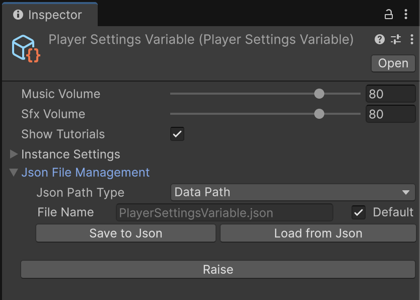
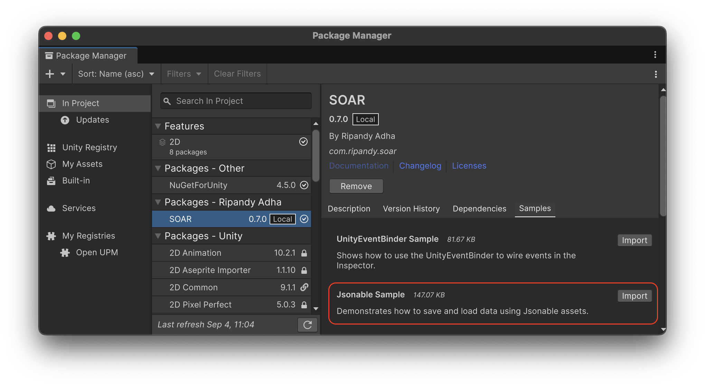

Jsonable Extension¶
SOAR includes a powerful "Jsonable Extension" feature that allows for the serialization and deserialization of Variable assets to and from JSON format.
This is particularly useful for saving and loading game data or initial configurations.
The functionality is exposed through the JsonableVariable<T> base class and a custom Inspector window, which provides tools for converting a variable's data to a JSON string or a local file.
Core Concepts¶
IJsonable Interface¶
The IJsonable interface defines the contract for objects that can be converted to and from a JSON string. It contains two methods:
ToJsonString(): Converts the object's data into a JSON formatted string.FromJsonString(string jsonString): Populates the object's data from a JSON formatted string.
JsonableVariable<T>¶
JsonableVariable<T> is an abstract class that inherits from Variable<T> and implements the IJsonable interface. Any Variable that needs to be saved to or loaded from JSON should inherit from this class.
When serializing, JsonableVariable<T> handles primitive types (like int, float, string) by wrapping them in a JsonableWrapper<T> to ensure they are correctly formatted as a JSON object (e.g., {"value": 10}). Complex [Serializable] types are serialized directly.
Creating a JsonableVariable¶
To make a custom Variable jsonable, simply inherit from JsonableVariable<T> instead of Variable<T>.
-
Define the Data Type: Ensure the data type is
[Serializable]. -
Create the JsonableVariable Class: Inherit from
JsonableVariable<T>.
Now, PlayerSettingsVariable assets can be created, and they will have the JSON serialization features available in their Inspector.
Editor Integration¶
The JsonableVariableEditor provides a custom Inspector for any asset inheriting from JsonableVariable<T>. In addition to the standard Variable features, it includes a "Json File Management" section.

This UI allows for:
- Choosing a Save Path: Select between Unity's
Application.dataPath,Application.persistentDataPath, or a custom file path. - Specifying a Filename: A filename for the JSON file can be set. By default, it uses the name of the
ScriptableObjectasset (e.g.,PlayerSettingsVariable.json). - Saving to JSON: The "Save to Json" button serializes the current
Valueof the variable and writes it to the specified file. - Loading from JSON: The "Load from Json" button reads the specified JSON file and deserializes its content into the variable's
Value.
JsonableExtensions¶
SOAR also provides a set of extension methods in the Soar.JsonableExtensions class to make working with IJsonable objects from code more convenient.
These methods allow for saving and loading IJsonable objects with various path and filename configurations.
Saving to a File¶
An IJsonable object can be saved to a JSON file directly from code.
// File: SaveManager.cs
using Soar;
using Soar.Variables;
using UnityEngine;
public class SaveManager : MonoBehaviour
{
[SerializeField] private PlayerSettingsVariable playerSettings;
public void SaveSettings()
{
// Save to Application.persistentDataPath with the filename "PlayerSettings.json"
playerSettings.SaveToJson(Application.persistentDataPath, "PlayerSettings");
Debug.Log("Player settings saved!");
}
}
Loading from a File¶
Similarly, data can be loaded from a JSON file into an IJsonable object.
// File: LoadManager.cs
using Soar;
using Soar.Variables;
using UnityEngine;
public class LoadManager : MonoBehaviour
{
[SerializeField] private PlayerSettingsVariable playerSettings;
void Start()
{
// Load from Application.persistentDataPath
if (playerSettings.IsJsonFileExist(Application.persistentDataPath, "PlayerSettings"))
{
playerSettings.LoadFromJson(Application.persistentDataPath, "PlayerSettings");
Debug.Log("Player settings loaded!");
}
else
{
Debug.Log("No saved settings found. Using default values.");
}
}
}
The JsonableExtensions class also includes methods to check for the existence of a JSON file (IsJsonFileExist), providing a complete toolkit for managing data persistence with SOAR variables.
Sample Usage¶
To test this feature, the relevant sample package can be imported from the Package Manager window.

The Jsonable Sample demonstrates how to create a custom JsonableVariable to hold settings data. It includes a UI to edit the data at runtime and buttons that use the JsonableExtensions to save the variable to a file and load it back.
For detailed setup and usage instructions, please refer to the README.md file inside the JsonableSamples folder after importing.